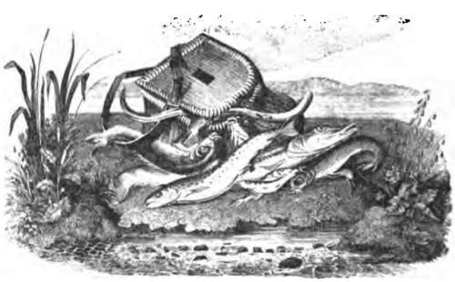
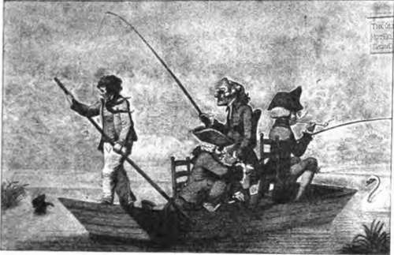

Fishing For Pike: Rods And Tackles. Continued
Description
This section is from the book "Fishing", by Horace G. Hutchinson. Also available from Amazon: Fishing.
Fishing For Pike: Rods And Tackles. Continued
There are plenty of low-priced lines to be had, but they are not cheap because of little cost; they are badly made and untrustworthy, consisting of a core of shoddy material, around which silk is plaited and covered with varnish or waterproofing. This, after a few times using, cracks, and lets the water into the core, which quickly rots, and the line is unreliable under the strain of playing a fish of " respectable size." These lines are sold by Red ditch firms as " American patent-lines," but I believe they are made in Germany, and are " rubbish." The wisest plan is to test a line by unravelling half an inch of its end ; if silk all through it is reliable, and a No. 3 size should be strong enough to capture any fish that swims in fresh water. The following is a recipe for waterproofing lines, which I have always found to answer well:-A pint of boiled cold - drawn linseed oil, a wineglassful of gold-size, two tablespoonsful of copal varnish, poured all together into an earthen-pipkin; cover with a small piece of slate, or a tin puttypan, to keep out the dust; and place on hob of stove to simmer for three or four days, stirring occasionally until the gold-size and copal are thoroughly incorporated with the oil. Then coil the line loosely in an old pie-dish, pour enough waterproofing on the line to cover it, stretch paper over, and stand dish for two or three days in a gentle heat for the line to soak thoroughly full of the dressing. After this is done, take the end of line off the top coil and draw all the line through a piece of an old kid-glove held between the fingers and thumb, squeezing out all the superfluous dressing, letting the line fall on to a large sheet of paper to save it from dust or dirt. After this hang it in coils on, or wind it round, a clothes-horse, or the backs of two chairs, where leave it for two or three days to dry; then on a warm day stretch it in the garden between smooth nails driven into the walls or fence, or between trees; and polish the line by rubbing it with a little sweet-oil on a piece of soft leather or old kid-glove.
The next tackle to be considered is the pike-trace, and whether for " spinning," " live-baiting," or " paternostering," none are so good as those of best salmon-gut, stained olive-green, so that they may assimilate to the colour of sub-aqueous weeds, or olive-brown if weeds are decaying. If gimp traces are preferred, platinum-gimp is best, as it does not glitter in the water like brass-gimp. If none but brass-gimp can be obtained, it may be stained a dark colour by soaking it in a solution of bichlorate of platinum mixed with water (one-part platinum to six or eight of water), then dried before a fire; or, if hung in the fumes of burning brimstone, brass-gimp turns a deep copper colour.
The following recipes for staining gut are from Keene's " Practical Fisherman ": -
Green Colour
Steep the gut in strong green tea for twelve hours.
Light Green
Boil a piece of green baize and steep in the liquor while it is warm.
Brown Stain
Steep in strong coffee.
Bluish Green
Boil a handful of logwood in a pint of water, add a piece of copperas, size of small nut, pounded under a hammer. Immerse the gut when the preparation is cold until the requisite hue is obtained.
" Red water stain, useful among decaying weeds.-Steep in a teacupful of black tea till of sufficient depth of tint."
Stephen's blue-black ink diluted with water makes a useful stain. The gut must be well rinsed in clean water after removing it from the stain. Metal traces made of twisted copper wire, and others of annealed wire are excellent, and practically un breakable under the strain of the heaviest pike, and can be obtained at C. Farlow & Co. It is necessary to have a lead on the "spinning-trace," placed from two to three feet above the bait, of sufficient weight to sink it (whether a natural or artificial bait) a couple of feet or so under the surface of the water; the lead must be so shaped or bent that its centre of gravity hangs below the level of the trace, which prevents kinks or twists occurring in the line above the lead. Among the best are the "Pennell leads," which are made in four sizes, from i oz. to f oz., and the " Archer-Jardine" non-slipping detachable leads, made in twelve sizes, from i oz. for perch and chub fishing; the medium sizes, from ¾ oz. to 2 ozs., for pike; and the largest 2J ozs. to 4 ozs., for sea-fishing.
There must also be three swivels, or one double and a single swivel in the trace, between the lead and " flight" to assist the revolving or spinning of the bait.
The next tackles to consider are spinning flights, for "spinning" is probably the most popular and also the most successful method that can be employed to capture a quantity where jack and pike run small-say, from 4 lbs. to 10 lbs.-for a lifelong experience has taught me that much the largest specimens are caught by live bait, "snap," and paternoster fishing, which methods I shall dilate on in my next chapter.
Flights as a rule are made in three sizes. No. 1 is adaptable for small baits, such as gudgeon, dace, or bleak from 4 inches to 5 inches long, and are suitable for jack from 3 lbs. to 5 lbs. weight; No. 2 are for large gudgeon or dace from 5 inches to 6 inches long, and suited for pike from 6 lbs. to 10 lbs. weight; No. 3, for dace of 6 inches or 7 inches long, is the proper size for pike of 10 lbs. and upwards.
The old-fashioned Thames flights, which consisted of three triangles, a reversed hook and lip-hook, are clumsy and almost obsolete. The Pennell flights, especially those made with a straight reverse hook and one flying-triangle (or two if No. 3 size of flight be used); also those known as " Farlow's registered flights," have at present no superiors. To bait the " Pennell" flight, pass the loop at end of gimp under the gill-cover and out of the bait's mouth; then push the single hook through its back, pull gently on this hook towards the head of bait, and when the tail assumes sufficient curve to cause the bait to rotate when drawn through the water, then push the reverse hook-ie. the barbed-pin-through the bait from side to side. Pass the " gimp-loop " through the nose or upper lip of the bait first and the under lip next, and again under itself, thus forming a half-knot, which never slips.
This description applies equally well to Farlow's flights. Sometimes both kinds are made with sliding lip-hooks, which can be slipped up or down without injury to the gimp, and thus adapted to the size of the spinning-bait. There is another tackle that is simple and very effective, known as " Storr's flight." It consists of one large triangle; this is attached to 10 inches of gimp, which is passed through the bait from the vent and out of its mouth by means of a baiting-needle, one of the hooks of the large triangle jamming against the vent and there remaining. A small triangle on an inch and a half of gimp is slipped over the hook-gimp, and may be inserted in the shoulder of the bait, or left to fly loose; a sliding lip-hook completes the tackle.

Continue to:
- prev: Chapter X. Fishing For Pike: Rods And Tackles
- Table of Contents
- next: Chapter XI. Fishing For Pike: "Spinning," "Live-Baiting," And "Paternostering"